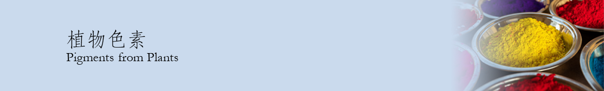
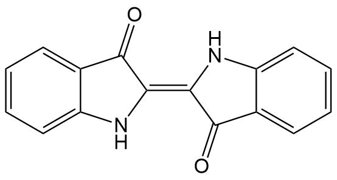

靛青
靛青即靛蓝，又名食品蓝1号、食用青色2号，为水溶性非偶氮类着色剂。靛蓝类色素是人类所知最古老的色素之一，广泛用于食品、医药和印染工业。
《劝学》有云：“青，取之于蓝而青于蓝。”其中的“青”就是靛青，“蓝”就是蓼蓝。蓼蓝是一种植物，作为一种古老的色素，靛青最早利用蓼蓝制取。将靛叶堆积，经常浇水，使其发酵2～3个月，成为黑色土块状。用臼捣实后称为球靛，含靛蓝色素2%～10%。球靛中拌入木灰、石灰及麸皮，再加水拌和，加热至30～40℃，暴露在空气中，成为蓝色不溶性靛蓝。有意思的是，蓼蓝的根即为中药板蓝根，具有清热消炎的作用，在南方广为人知。
现代工业中亦广泛使用靛蓝作为染色剂。靛蓝可用于棉纱、棉布、羊毛或丝绸的染色。具有优良的耐光、耐气候牢度及耐热稳定性。化学合成靛蓝方法为：将2-硝基苯甲醛溶于丙酮中，之后缓慢加入氢氧化钠溶液，即可看到深色的靛蓝沉淀产生。
文章录入：梅云皓 责任编辑：梅云皓